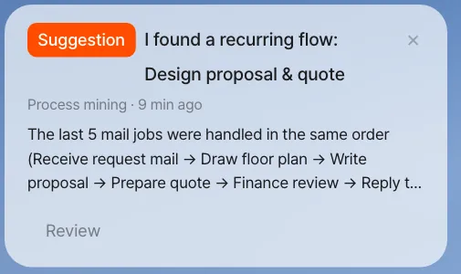
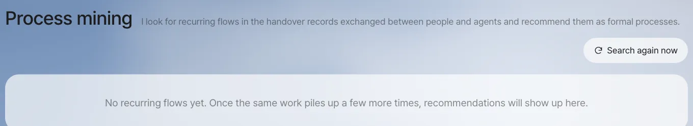
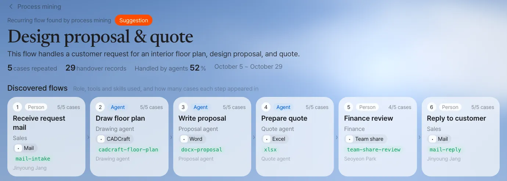
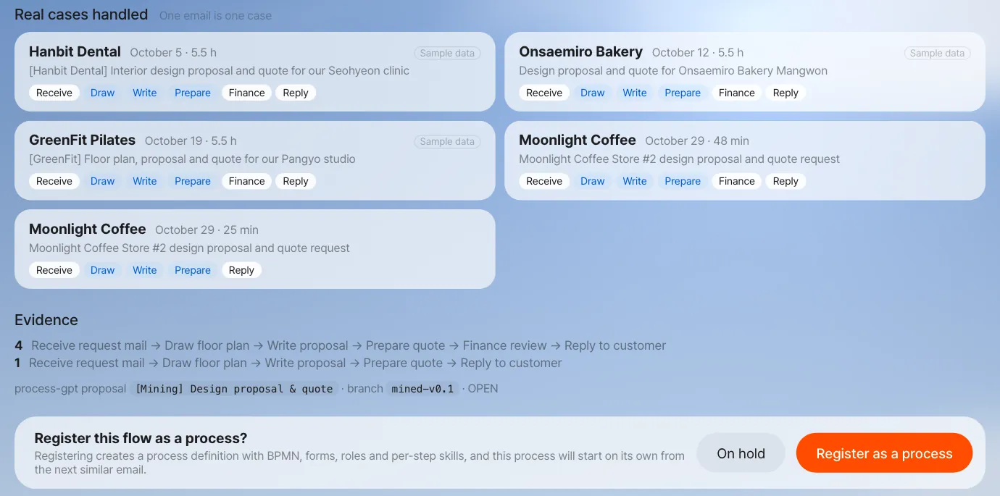
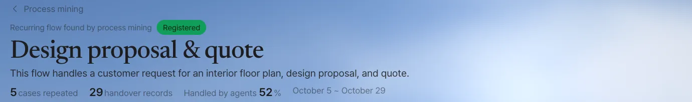
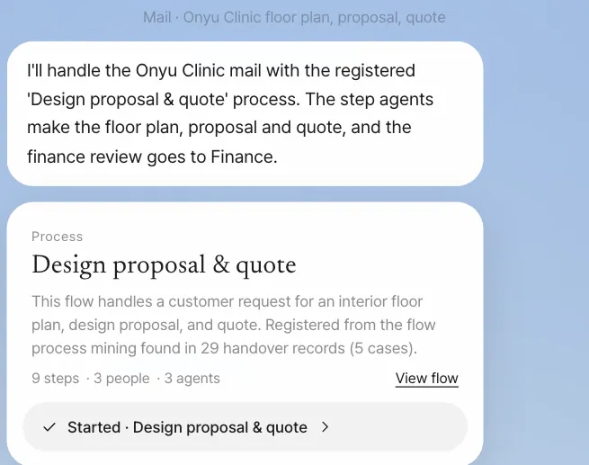
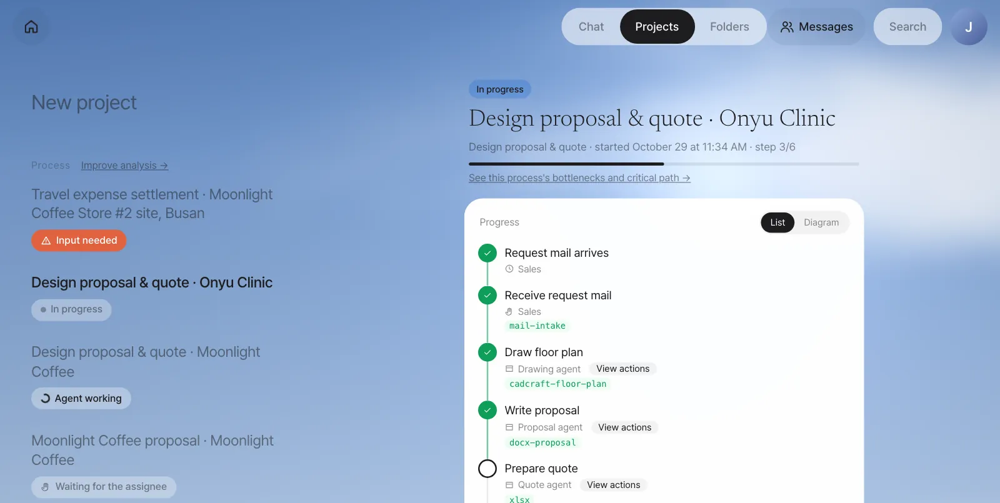
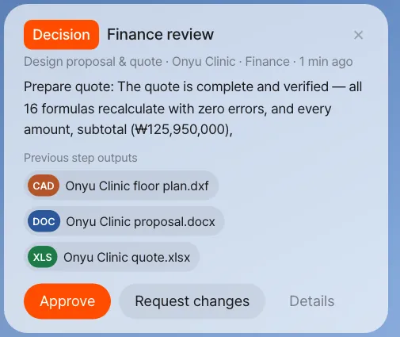

Work that starts from an email and passes between people and agents leaves handover records. Once the same flow has piled up a few times, process mining finds the pattern and suggests it to an admin. When the admin registers it, the process starts on its own from the next similar email, and each step goes to the right person or agent.
Drawing from the top vs. finding from the bottom#
In Chapter 17 you drew a process from the top. Team lead Jinyoung Jang described the flow in words, and the assistant turned it into BPMN. The travel expense settlement in Chapter 18 was also a definition someone had drawn in advance. That works well when you already know the flow.
But most work doesn't start as a process. The Moonlight Coffee Store #2 job also began with one email and was handled case by case through Chapter 9–Chapter 16. Process mining means finding the recurring flow from the bottom, in the records of that ad hoc work.
| Create by chatting (Chapter 17) | Mining (this chapter) | |
|---|---|---|
| Starting point | The flow people know | The records of the work actually done |
| Step names | As you said them | As they were recorded |
| Owners | You have to set the roles | By default, the people who actually did each step |
| Good for | New work, work with set rules | Work your team already knows by heart but has never written down |
What gets recorded — handover records#
Lite groups work that started from an email into one case, and inside that case it writes one handover record line each time the work moves on. The format is the same as Process GPT's handover records.
| When | Step recorded | Receiver |
|---|---|---|
| A customer email asks for documents | Receive request mail | The person who got the email |
| The assistant makes a draft | Draw floor plan · Write proposal · Prepare quote | The drawing, proposal and quote agents |
| The draft is shared with a teammate (Chapter 14) | A review named for the receiver's role (Finance → Finance review, Designer → Design review, anyone else → "(role) review") | The teammate who received it |
| You reply to the customer | Reply to customer | The person who replied |
| Materials are shown or work is assigned in a meeting (Chapter 16) | Meeting material shared · Tasks assigned during the meeting | The person or agent who received it |
Each handover record line holds who → to whom, what work, when, and which tool (CADCraft, Word, Excel) and skill was used.
Names of share steps, and where a case ends
A share step is named after the receiver's role (Settings › Team & roles). If the receiver has no role, the name comes from the share note ("drawing…" means Design review, "quoted amount…" means Finance review). That's why the designer's review and Finance's review are recorded as different steps. Replying to the customer ends the case, so anything shared after the reply isn't added to the case. How are cases grouped? on the mining screen states the same rules.
Try it 1 — Build up past records#
Mining needs at least 4 cases before it looks for a pattern. The screens in this chapter were captured after loading, as practice data, the handover records of three similar requests Jinyoung Jang's team handled earlier in October, plus one real case: the Moonlight Coffee Store #2 practice mail of Chapter 9, whose drafts were shared with Seoyeon Park (Finance) and then answered. In a real company, these records pile up on their own over a few weeks.
| Case | Customer · request |
|---|---|
| Oct 5 | Hanbit Dental — interior design proposal and quote for the Seohyeon clinic |
| Oct 12 | Onsaemiro Bakery — design proposal and quote for the Mangwon store |
| Oct 19 | GreenFit Pilates — floor plan, proposal and quote for the Pangyo studio |
| Oct 29 | Moonlight Coffee — design proposal and quote for Store #2 (the live case) |
All four went in the same order:
Receive request mail (Jinyoung Jang) → Draw floor plan (drawing agent) → Write proposal (proposal agent) → Prepare quote (quote agent)
→ Finance review (Seoyeon Park) → Reply to customer (Jinyoung Jang)
For instructors and admins (optional) — load practice cases
An admin who can work in the server folder can use the practice-data script that comes with Lite to load three past cases (Receive request mail → Draw floor plan, Write proposal, Prepare quote → Finance review → Reply to customer) and set up the admin: node server/scripts/seed-mining-demo.mjs <sales account email> <finance account email> <admin account email> (with the install bundle, from the install/ folder: docker compose exec -w /app/server server node scripts/seed-mining-demo.mjs …). For the English cases, use --lang en (it loads them into the English demo tenant, en-demo, so with the install bundle also add --tenant lite). Add the one email you handled yourself in Chapter 9 — drafts, a share with Finance, and the reply — and you have 4, as in this chapter's screens. If you can't use the script, read along with the screenshots in this chapter to learn the flow.
Try it 2 — The miner finds the pattern#
Every minute, the Lite server asks Process GPT's process miner (a calculation service that finds recurring flows), "Is there a recurring flow?" The miner finds flows with fixed calculations and no AI model, so the same records always give the same answer.
- It builds the set of activities for each case and groups cases whose sets overlap by 60% or more (so that different kinds of work don't merge into one model).
- Within a group, it treats the activities that appear in at least half of the cases as core activities, and takes the most common order as the main flow.
- For each step, it counts who handled it (role and owner), the share handled by agents, and the tools and skills used.
If a case is still in progress (it hasn't reached the last step, or it just moved), the miner waits. Suggesting a flow from a case in progress would leave out the later steps.
In our run, this suggestion appeared within a minute of the reply that closed the live case (the name and summary come from an AI model, so they may differ from run to run). Two Store #2 practice mails had been handled by then — one replied to after a Finance share, one replied to without a share — so the suggestion counts 5 cases.
| Item | Value |
|---|---|
| Name | Design proposal & quote |
| Summary | This flow handles a customer request for an interior floor plan, design proposal, and quote. |
| Evidence | 5 cases, 29 handover records, 52% handled by agents |
| Steps | 6 (four cases in the same order; one went from Prepare quote straight to Reply to customer without Finance review) |
| Roles | Sales (Jinyoung Jang), drawing, proposal and quote agents, Finance (Seoyeon Park) |
| Clues for recognizing the next email | Formats dxf, docx, xlsx; words interior, design, proposal, quote, floor, plan |
Watch the video
The process mining demo video shows the whole run in one go: email work records → suggestion → registration → the next email starting as a process (the demo accounts and customer names differ from this chapter).
Try it 3 — The suggestion reaches the admin#
Suggestions go only to admins. The admin's Home shows the notification card "I found a recurring flow: Design proposal & quote." The card description says how many cases were handled and in what order.
The last 5 mail jobs were handled in the same order (Receive request mail → Draw floor plan → Write proposal → Prepare quote → Finance review → Reply to customer) …

When someone who isn't an admin opens the mining screen (address ending in /mining), the server refuses the suggestion list and the suggestion details. In the current English version the screen then simply shows no suggestions (the Korean screen says "Only admins can see this.").

Open the suggestion from the notification card or the mining screen, and you see the following. In this chapter the admin is team lead Jinyoung Jang.


| Part | What it shows |
|---|---|
| Discovered flows | The steps in order — people steps (role owners get a notification) and agent steps (run on their own) shown apart |
| Steps | For each step, the role, the tools and skills used, and how many cases it appeared in |
| Evidence | The real cases handled — customer, email subject, time taken, owner of each step. Cases loaded for practice are marked Sample data |
| Decision | Register as a process · On hold |
Try it 4 — Register it as a process#
When the admin clicks Register as a process, the miner derives the flow once more from all the cases so far and saves it through Process GPT's own process-definition save path.
| What registering creates | Details |
|---|---|
| Process definition | BPMN, a form for each step, a start (request email arrives) and an end (reply sent) |
| Agent steps | Drawing the floor plan and writing the proposal and quote run on their own, with the skills used so far (cadcraft-floor-plan, docx-proposal, xlsx) attached as they are |
| Role owners | For people steps, the teammates who have been doing that work become the owners (Sales → Jinyoung Jang, Finance → Seoyeon Park) |
| Link to the next email | When an email matches the clues in the table above (2 or more formats, or 2 or more words), it starts this process |
Click On hold and the suggestion folds away, and the same pattern isn't suggested again. As more cases pile up, the decision stays the same and only the evidence grows. Even if newly grouped cases overlap more than half with an existing suggestion's cases, no new suggestion is made; they're added as evidence to that suggestion, so the same flow is never suggested twice.

Check the case list before you register
Registering derives the flow again from the cases so far, so a case that includes handovers unrelated to the flow can add unneeded branches to the definition. Shares after the customer reply are no longer added to cases, but skim the case list once before you register. If the derived flow has steps that run at the same time, the registered definition's BPMN draws them with a parallel gateway (a diamond with ＋), and branches where only one path is taken with an exclusive gateway (a diamond with ×). In our run, the one case without a Finance review gave the definition an exclusive Split before Finance review with two placeholder conditions (Condition 1, Condition 2) that nobody filled in; when the next email started the process, both Finance review and Reply to customer were handed out as to-dos at once.
Try it 5 — The next email becomes a process#
Once the process is registered, when a new design request email comes in, the assistant starts the registered process instead of making ad hoc drafts. The chat of the person who got the email shows this:
I'll handle the … mail with the registered 'Design proposal & quote' process. The step agents make the floor plan, proposal and quote, and the finance review goes to Finance.
A process card is attached below it, and from there it's the same as Chapter 18. In our run, when a new email ("[Onyu Clinic] Request for an interior design proposal and quote for our Pangyo clinic") arrived in team lead Jinyoung Jang's inbox, the formal process started within seconds of the mail being read.


When the three agent steps finished (about 17 minutes in our run), the Finance review went to Seoyeon Park. Her Home shows a Decision · Finance review card with the gist of the quote step and chips for the previous steps' outputs (floor plan, Word proposal, quote).

Check: each step has an owner. In our run, the instance's to-dos were assigned like this: Receive request mail and Reply to customer → Jinyoung Jang; Draw floor plan, Write proposal and Prepare quote → the three agents; Finance review → Seoyeon Park.
Registration applies to the whole company
A registered process picks up any email, no matter who received it, when the clues match. This is so that the same work follows the same procedure regardless of who receives it. If several people share a practice server, keep in mind that after you register, other people's practice design request emails (Chapter 9) will also start this process instead of making ad hoc drafts. If several processes are registered, the most recently registered one is checked first.
Next#
Once formal processes start running, instead of handover records you get run records that keep the exact start and end time of every step. In Part 6, "Improving processes," you'll use these records to find and fix where work piles up (Chapter 20), how much time adds value and how much is spent waiting (Chapter 21), and which path sets the total duration (Chapter 22).
Check your understanding
- If one of the four cases went only "Prepare quote → Reply to customer" and ended, would that case be grouped into the same pattern?
- What happens if, after the admin puts the suggestion On hold, ten more email tasks with the same flow pile up?
- After registration, an email arrives saying "Please send a quote for event refreshments (Excel)." Will it start this process?
Answer
- No. That case's activity set (roughly Receive request mail, Prepare quote and Reply to customer) overlaps the 6-step set by less than 60%, so it goes into a different group. If 4 or more such cases pile up, they're suggested separately as a "quote-only flow."
- The same pattern isn't suggested again. Only the suggestion's evidence (the number of cases) grows, and the decision (on hold) stays the same.
- No. Of the format clues, only xlsx matches (2 or more needed), and of the word clues (interior, design, proposal, quote, floor, plan), only "quote" matches (2 or more needed). This email is handled as usual with ad hoc drafts.